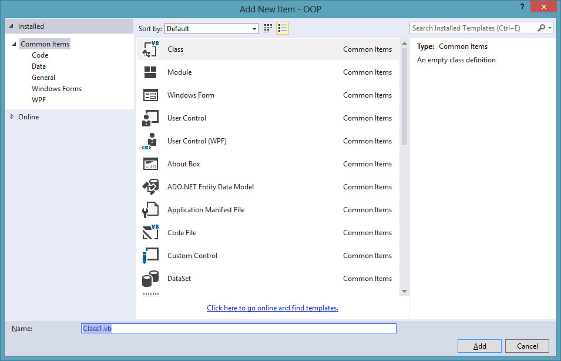
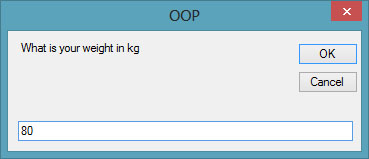
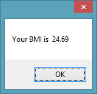

Visual Studio 2013 Lesson 24: Object Oriented Programming
[Lesson 23] << [Contents] >> [Lesson 25]
In order for a programming language to qualify as an object oriented programming language, it must have three core technologies namely encapsulation, inheritance and polymorphism. These three terms are explained below:
Encapsulation
Encapsulation refers to the creation of self-contained modules that bind
processing functions to the data. These user-defined data types are called
classes. Each class contains data as well as a set of methods which
manipulate the data. The data components of a class are called instance
variables and one instance of a class is an object. For example, in a
library system, a class could be member, and John and Sharon could be two
instances (two objects) of the library class.
Inheritance
Classes are created according to hierarchies, and inheritance allows the
structure and methods in one class to be passed down the hierarchy. That
means less programming is required when adding functions to complex systems.
If a step is added at the bottom of a hierarchy, then only the processing
and data associated with that unique step needs to be added. Everything else
about that step is inherited.
Polymorphism
A class consists of data members as well as methods. In Visual Studio 2013 , the program structure to define a Human class can be written as follows:
Public Class Human
‘Data Members
Private Name As String
Private Birthdate As String
Private Gender As String
Private Age As Integer
‘Methods
Overridable Sub ShowInfo( )
MessageBox.Show(Name)
MessageBox.Show(Birthdate)
MessageBox.Show(Gender)
MessageBox.Show(Age)
End Sub
End Class
Another Example:
Public Class Car
‘Data Members
Private Brand As String
Private Model As String
Private Year Made As String
Private Capacity As Integer
‘Methods
Overridable Sub ShowInfo( )
MessageBox.Show(Brand)
MessageBox.Show(Model)
MessageBox.Show(Year Made)
MessageBox.Show(Capacity)
End Sub
End Class
Let’s look at one example on how to create a class. The following example shows you how to create a class that can calculate your BMI (Body Mass Index).
To create class, start Visual Studio 2013 as usual and choose Windows Applications. In the Visual Studio 2013 IDE, click on Project on the menu bar and select Add Class, the Add New Item dialog appears, as shown in Figure 24.1Figure 24.1
{kind=link}
The default class Class1.vb will appear as a new tab with a code window. Rename the class as MyClass.vb. Rename the form as MyFirstClass.vb.
Now, in the MyClass.vb window, create a new class MyClass1 and enter the following code
Public Class MyClass1
Public Function BMI(ByVal height As Single, ByVal weight As Single)
BMI = Format((weight) / (height ^ 2), “0.00”)
End Function
End Class
Now you have created a class (an object) called MyClass1 with a method known as BMI.
In order to use the BMI class, insert a button into the form and click on the button to enter the following code:
Private Sub BtnBMI_Click(sender As Object, e As
EventArgs) Handles BtnBMI.Click
Dim MyObject As Object
Dim h, w As Single
MyObject = New MyClass1()
h = InputBox(“What is your height in meter”)
w = InputBox(“What is your weight in kg”)
MessageBox.Show(MyObject.BMI(h, w))
End Sub
When you run this program and click the button, the user will be presented with two input boxes to enter his or her height and weight subsequently and the value of BMI will be shown in a pop-up message box, as shown in the figures below:
{kind=link}
Figure 24.2
Figure 24.3
{kind=link}
Figure 24.4
{kind=link}